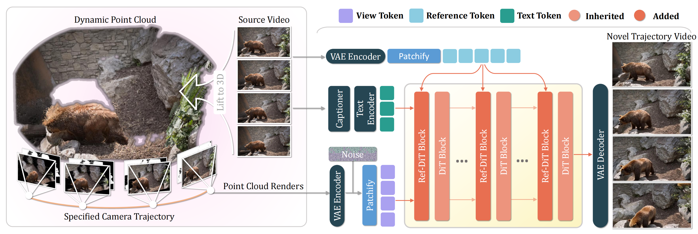

📌 Abstract
The abundance of casually captured monocular videos and images on social media provides a valuable source for immersive content creation, where generating novel views from such sparse observations can greatly enhance user experiences. However, producing photorealistic and geometrically consistent views with precise camera control remains challenging when input coverage is extremely limited. Reconstruction-based approaches such as NeRF and 3D Gaussian Splatting (3DGS) deteriorate severely under sparse inputs and fail to explicitly handle occlusions. Generative methods ease data requirements but still struggle with large-baseline view synthesis due to inaccurate or implicit geometric guidance. To overcome these limitations, we introduce UniView, a unified framework that enables large-baseline 3D and 4D novel view synthesis from monocular inputs. UniView integrates explicit 3D guidance with generative diffusion modeling to enable precise camera control and geometrically consistent view generation. The 3D guidance is obtained through an occlusion-aware point cloud rendering strategy that resolves visibility ambiguities and provides accurate geometric priors for diffusion-based synthesis. By seamlessly coupling this rendering strategy with powerful video diffusion backbones, UniView achieves high-fidelity novel view generation even under extreme camera motions and wide-baseline changes, and further supports static and dynamic 3DGS reconstruction for immersive 3D and 4D experiences. Comprehensive experiments on 3D and 4D view synthesis as well as 4D reconstruction confirm the effectiveness of UniView, demonstrating state-of-the-art performance across all tasks.
A Unified Framework for Spatial-Temporal Synthesis
Why UniView?
Key technical innovations that set UniView apart from traditional reconstruction and generative baselines.
Traditional point projection often causes "tearing" in large-baseline views. UniView uses a novel Double-Reprojection strategy to resolve visibility ambiguities and explicitly handle occlusions.
We introduce Ref-DiT blocks that synergize spatially-aligned geometric priors with visually-rich source appearance, ensuring both structural accuracy and texture fidelity.
UniView is trained on a curated mix of large-scale dynamic monocular videos and static multi-view datasets, enabling robust generalization across diverse real-world scenes.
🦄 Methodology
Figure 1: The overall pipeline of UniView framework.
🏆 Qualitative Results
Figure 4: Qualitative comparison on in-the-wild monocular videos. We show results of redirecting the camera trajectory (e.g., "zoom-in and orbit") from the input videos. UniView maintains high fidelity and geometric consistency compared to baselines like ViewCrafter and GCD.
Comparing full model (w/ Ref-DiT) to alternatives. The yellow box highlights how Ref-DiT preserves texture details better than direct concatenation.
Models trained without multi-view data struggle with occlusions, while those without dynamic data fail to follow motion. Our mixed strategy solves both.
4D Scene Reconstruction. By leveraging the generated multi-view videos, UniView enables high-quality 4D Gaussian Splatting reconstruction from a single monocular video input.